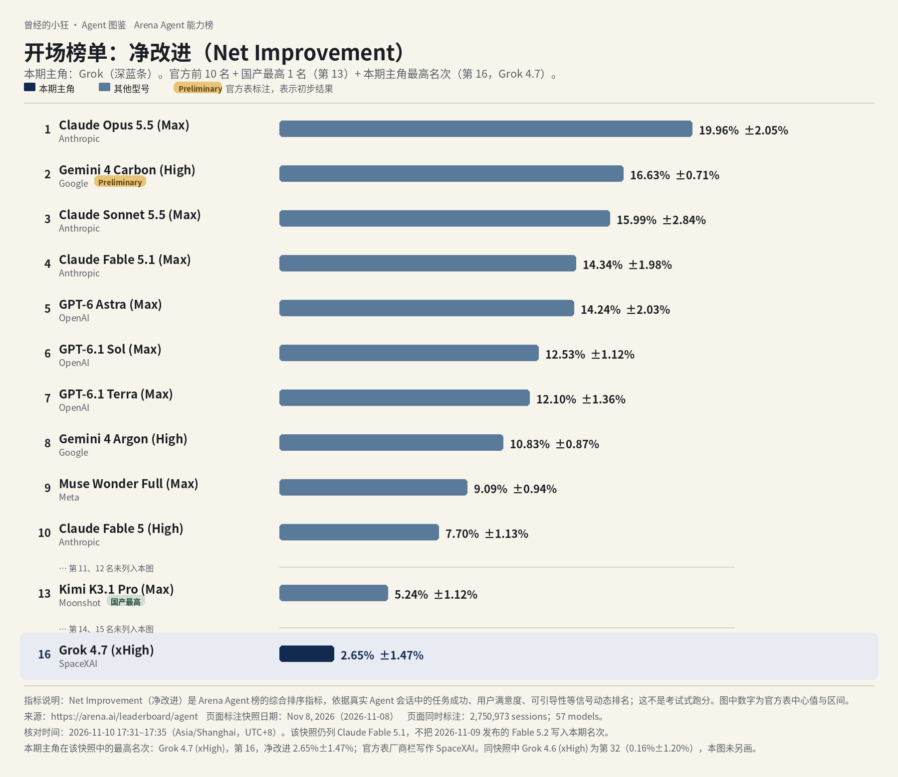
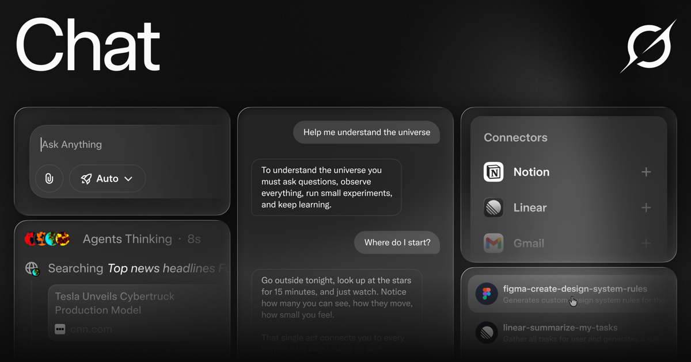
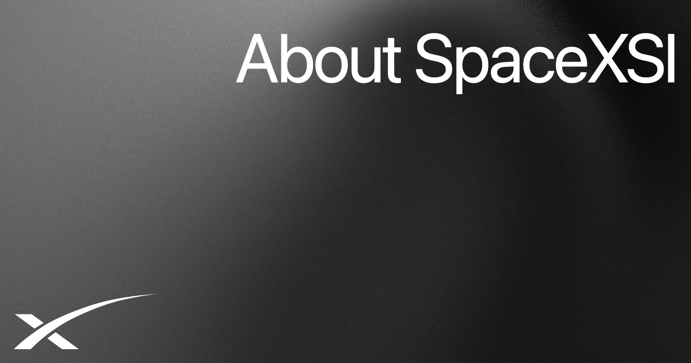
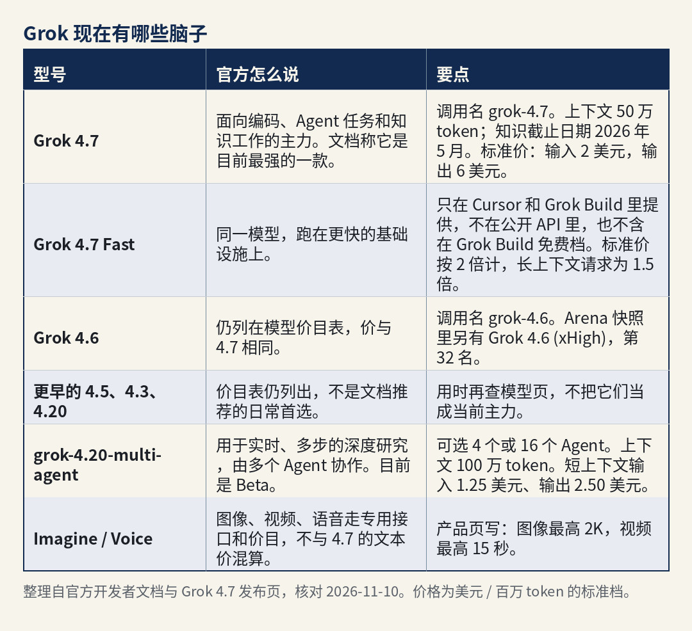
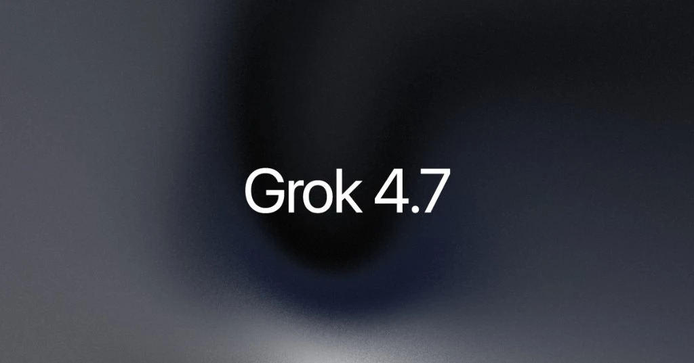
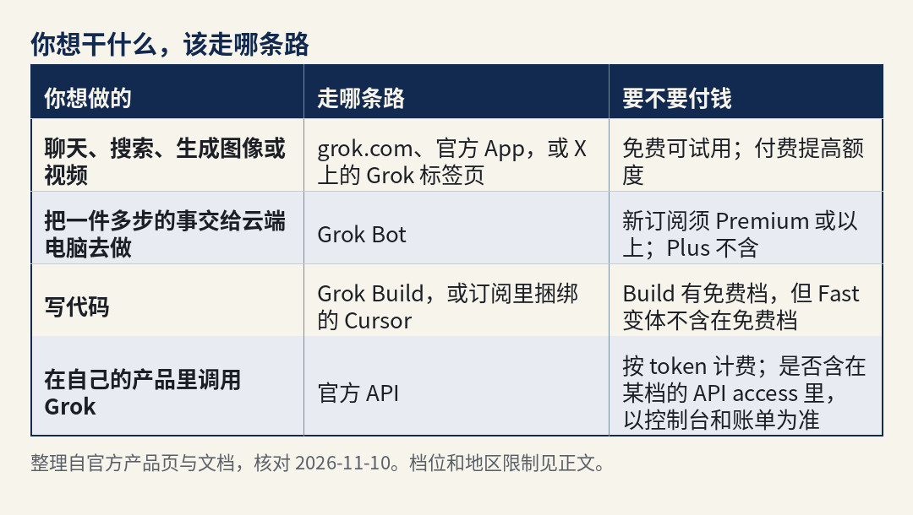
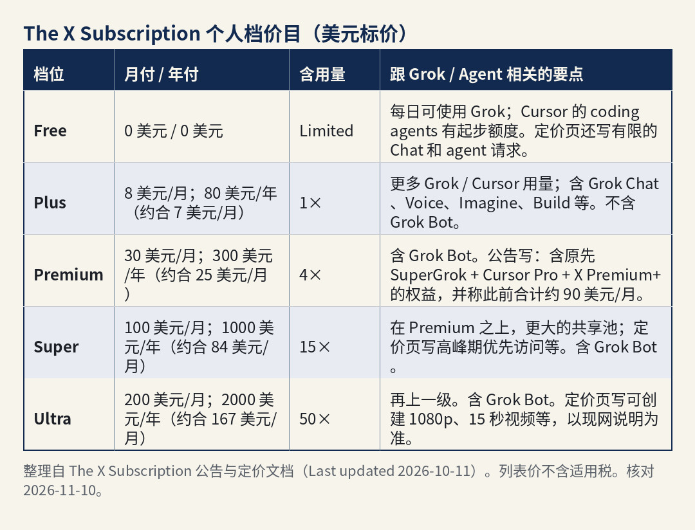
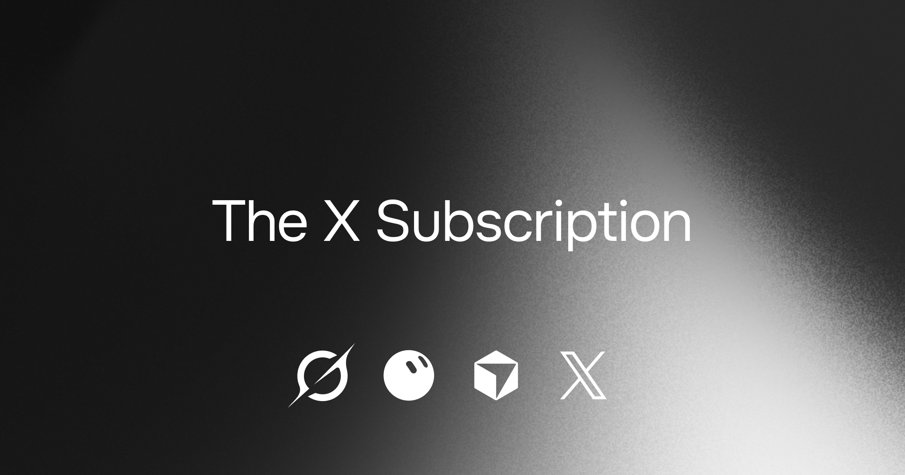

曾经的小狂 · Agent 图鉴 第 3 篇
你先别急着记名字。先看这张图。

全球 Agent 前十，并在前十和国产最高之后补出第 16 名 Grok 4.7（Arena Agent 榜 · 净改进，2026 年 11 月 8 日快照）。深蓝条为本期主角，名次缺口已标注。数据来源：arena.ai/leaderboard/agent。Fable 5.2 未进入本期快照。核对日期：2026-11-10。
同一张 Arena 的 Agent 榜，同一份 2026 年 11 月 8 日快照。它看的不是传统那种刷题跑分，而是真实会话里，一个助手把事情做完之后，综合表现到底好了多少，指标叫「净改进」。一共记了 2,750,973 场会话、57 个模型。核对时间是 2026 年 11 月 10 日 17:31–17:35（Asia/Shanghai，UTC+8）。数据来自 arena.ai/leaderboard/agent。第 2 名 Gemini 4 Carbon (High) 带官方 Preliminary 标注，表示初步结果。这份快照是 11 月 8 日的，Claude Fable 5.2 第二天才发布，没有进这期名次，图里也不写。
前十里没有 Grok。因为不在前十，这张图在前十名和国产最高（第 13 名，Kimi K3.1 Pro，5.24%±1.12%）之后，另画出第 16 名，避免你误以为榜上没有它：Grok 4.7 (xHigh)，净改进 2.65%±1.47%。同快照里还有 Grok 4.6 (xHigh)，排第 32（0.16%±1.20%），图里没另画这一条。榜上的厂商栏原文写作 SpaceXAI。
第 16 名只是这份快照里的净改进名次，不是购买资格，也不是考试分数。
今天要讲的主角，就是这条深蓝背后的产品：Grok。

来源：Grok 官方产品页 Open Graph 图，核对 2026-11-10。
公司怎么署名，先说清楚。写作里常被叫做 xAI。核对日打开的官网（域名仍是 x.ai）页眉和新闻都署名 SpaceXSI；面向消费者的 FAQ 写作 SpaceX Super Intelligence LLC（“SpaceXSI”），并写明它和 X Corp. 是两家公司。官方公司时间线写：2023 年 7 月 12 日是公司公告，2026 年 2 月 2 日是「xAI joins SpaceX」。Arena 榜的厂商栏则仍写作 SpaceXAI。这三处我都按原文写，不擅自改成一个「唯一正式名」。
说白了，Grok 是这家公司做的 AI 助手。你可以在网页 grok.com、官方手机应用，或者 X 上跟它聊天、搜索、生成图像或视频。免费可以试用；付了费，额度更高。要把一件多步的事做完，走的是 Grok Bot——官方把它写成有云端电脑的 AI 队友。写代码还可以走 Grok Build，以及订阅里捆绑的 Cursor。Cursor 本身会在本连载后面单独写，这里只交代它和 Grok 用量池的关系，不展开成另一篇产品介绍。
它的「脑子」是这家公司自己做的 Grok 系模型，不是借别人家的。当前主力，开发者文档写成 Grok 4.7。
这篇是介绍，不是评测。版本、价格、能不能用，都对过 2026 年 11 月 10 日的官方页面。我没上手用过的，不会写成我的体验。官方页说法不一致的地方，我会把两处都写出来，并标「待核」。
下面只写官方公司页、时间线和 FAQ 里能对上的节点，没有打开专页的融资金额不补。
官方 Company 页（x.ai/company）把使命写成：加速人类的科学发现，建造用于理解宇宙的 AI。时间线把 2023 年 7 月 12 日标为 Company announcement，把 2023 年 11 月 3 日标为 Announcing Grok，2023 年 12 月 7 日标为 Grok on X。2026 年 2 月 2 日这一条是「xAI joins SpaceX」；该新闻页的机器可读字段把发布日期写成 2026-02-02（UTC 零点，换算为北京时间仍是 2 月 2 日）。
面向消费者的 FAQ（x.ai/legal/faq）现网写：SpaceX Super Intelligence LLC（“SpaceXSI”）是一家美国公司，和 X Corp.（此前的 Twitter）是分开的。Grok 在 X 上的使用，另受 X 的条款约束。该页页上日期仍写 May 12, 2025；现网正文已用 SpaceXSI 署名，这个日期是首次发布日还是未改页脚，待核。年龄与「视所在地而定」等条款，以现网正文为准。
和本期直接相关的产品节点，公司时间线里还有：2026 年 8 月 11 日 Introducing Grok Bot；8 月 12 日 Introducing Grok 4.6；8 月 19 日 Grok Build 登陆网页和手机；8 月 29 日 Grok Bot now works with X；9 月 21 日 Introducing Grok 4.7；10 月 12 日 Introducing The X Subscription。这些日期以时间线页为准；细节以对应新闻和文档为准。
公司页时间线还列有 Grok for Excel / Word / PowerPoint / Outlook 等条目。本篇没有逐页打开这些办公插件的产品说明，不展开用法。

来源：官方公司页 Open Graph 图，核对 2026-11-10。
开发者文档 Models（docs.x.ai/developers/models）写：除了音频、图像、视频要走专用接口，其余事情——包括写代码——用 Grok 4.7，并称它是目前最强的一款。发布说明「Introducing Grok 4.7」（x.ai/news/grok-4-7）把它写成面向编码和知识工作的最强型号，价格和速度与 4.6 相同。
怎么选，我按官方自己的说法整理，不是我用过之后的判断。

型号对照。整理自官方开发者文档与 Grok 4.7 发布页，核对 2026-11-10。价格为美元 / 百万 token 的标准档。

Grok 4.7。来源：官方发布页 Open Graph 图，核对 2026-11-10。
官方还写：Grok 没有训练截止日期之后的实时知识；要把当下事件算进去，须启用服务端的 Web Search 或 X Search。token 是计费和容量的单位，你可以先把它理解成「用了多少文字量」。4.7 的 50 万 token 上下文，意思是一次能「看进去」的内容可以非常长。
开发者如果走 API，按每百万 token 计费。来源：docs.x.ai/developers/models 与 Grok 4.7 文档 docs.x.ai/developers/grok-4-7，核对于 2026-11-10。达到长上下文阈值的请求，官方写：整单按更高价计，不是只对超出的部分加价。提示不足 20 万 token 时，grok-4.7 与 grok-4.6 都是输入 2.00 美元、缓存命中 0.50 美元、输出 6.00 美元；grok-4.20-multi-agent-0309 是输入 1.25 美元、缓存命中 0.20 美元、输出 2.50 美元。提示达到或超过 20 万 token 时，这三款都是输入、缓存命中、输出各加倍（例如 4.7 为 4 / 1 / 12 美元）。美国区域端点 us.api.x.ai/v1 官方写：把推理留在美国，token 价再加 10%。列表价是否含税，以结账页为准。官方声明，价格可以调整。团队的实时价和速率限制，以控制台为准。Grok 4.7、Grok 4.20-multi-agent 在 Grok 消费应用里的展示名称，是否与 API 调用名完全一致，待核。
这里只讲官方产品里，和「模型 + Agent」直接相关的部分。
Grok 聊天、搜索、生成。产品页把它写成一个助手：聊天、搜索、推理和创作放在一起。可以按步骤显示推理；同一条对话里生成图像、视频和代码；也可以用低延迟语音对话。搜索官方写会查网页和 X 的实时内容，并给出引用。Imagine 可以从文本或参考图生成、再改。还可以上传文件（文档写：PDF、图像、表格、代码、音频等）做分析。产品页还列出 30 多种语言、跨对话记忆、可分享的公开链接等。免费可以在网页和 App 里试用。
Multi-agent（产品里的多 Agent）。产品页写：多个 Agent 并行处理更难的问题，各自展示推理过程，再合并成一个带引用的答案。页脚仍写：升级到 SuperGrok，可得到更高额度、优先访问和 multi-agent。这和定价页上的 The X Subscription 名称不完全一致，我在「多少钱」一节并陈，不在这里替你裁定「SuperGrok」四个字是不是已经全部换成新套餐名。新套餐里 multi-agent 精确对应哪一档，待核，以定价页和产品内实际开关为准。
Grok 在 X 里。公司时间线从 2023 年 12 月就把 Grok on X 列为节点。The X Subscription 公告写：共享用量池覆盖 Grok 应用、X 上的 Grok 标签页，以及 Cursor 里的 Grok 模型。付费档在连接个人 X 账号后，还带上对应的 X 权益（Plus 是勾号、创作者工具、更少广告；Premium 及以上官方写含完整的 X Premium+ 权益）。在 X 上使用 Grok，FAQ 提醒要看 X 帮助中心和 X 的条款。
Grok Bot。官方文档把它写成主动的 AI 队友：有一台云端的真实电脑，能做你在电脑上能做的事，例如做演示、跑活动、订餐、同步日历。多个 Bot 可以分工，共用这台云端电脑（浏览器、文件系统、终端）。可以聊天，也可以语音通话或发语音条。官方举例连接的工具包括 Google Drive、日历、Gmail、Slack、Notion 等，并支持 MCP 或 API 的自定义工具。入口：桌面、手机、Slack，以及 X。The X Subscription 文档写：Bot 含在 Premium、Super、Ultra，Plus 不含；Bot 的用量从该座位的每周共享池里扣，不是另给一池。官方写，重要动作仍要你确认。
Grok Build。4.7 文档把它写成编码 Agent，并且 4.7 是默认模型。公司时间线写：2026 年 5 月 25 日推出，7 月 15 日开源，8 月 19 日登陆网页和手机。Fast 变体只在 Cursor 和 Grok Build 里提供，不含在 Build 免费档。本篇没有把 Build 的每一份安装说明逐页展开；要用，以当时的官方文档为准。
API 里的 Agent 能力。4.7 支持函数调用、网页搜索、X 搜索和代码执行。若要做「一组 Agent 一起做深度研究」，官方走 grok-4.20-multi-agent（Beta），规则见上一节。The X Subscription 的 Plus 说明里写含 Grok API access，具体额度以账单和文档为准。
用一张表，把「你想干什么，该走哪条路」收一下：

使用路径对照。整理自官方产品页与文档，核对 2026-11-10。
产品页写的起步就这三步，我不加自己的路径。
1. 打开 grok.com，或安装 iOS / Android 官方应用。
2. 用 X 账号或邮箱登录，以便在各设备接上同一份对话和订阅。
3. 开始聊天；按需要切换搜索、推理、语音或图像等模式。
若要用 Grok Bot：先确认你的档位含 Bot（新订阅须 Premium 及以上），再按 Grok Bot 文档 docs.x.ai/grok-bot/overview 和入门页连接要用的应用，把任务交给它。官方写，重要动作仍要你确认。老用户也可能通过仍在继续的 SuperGrok 等套餐获得 Bot，以账户为准。
若要用 API：在控制台申请密钥，按 Quickstart 调用；4.7 示例走 Responses API，模型名 grok-4.7。文档建议设置 prompt_cache_key，以便缓存命中更稳定。
若已经有 SuperGrok、Cursor 或 X Premium：可以继续留在旧套餐；若要并到 The X Subscription，按官方 Unify / 账单入口走。订阅条款 x.ai/legal/bundled-subscription-terms 写：订阅由 X Subscription Corp. 出售；条款同时写明可经应用商店或其他分销方购买。走官方入口办理，别从非官方渠道买。
地区、年龄、语言。 Consumer FAQ 写：Grok 可在 iOS、Android 和 grok.com 使用；「视所在地而定」，可能有有限的免费使用和付费完整功能。该页没有给出一份像 ChatGPT 那样的国家名单。中国大陆能不能注册、能不能完成扣款，我不以这份 FAQ 自行推断，标待核，以结账页和当时的地区说明为准。我所用的官方页里，也没有中国大陆的人民币税后价目表，这里不猜。
年龄：FAQ 写 Grok 不面向 13 岁以下；13 到 17 岁须有家长或监护人同意，并同意服务条款。
语言：产品页写原生支持 30 多种语言。我没有在该页看到「不含中文」的限制，也不把「一定支持某种中文界面」写成保证。
在 X 上使用时，访问与隐私以 X 的条款和帮助中心为准。
个人档以 The X Subscription 公告（x.ai/news/x-subscription，新闻列表标注 2026-10-12）、定价文档 docs.x.ai/x-subscription/pricing（文档写 Last updated October 11, 2026；R1 于 2026-11-10 19:27 重抓）为准。列表价不含适用税；需要时，税可能在结账时另加。官方声明，价格可以调整。
新用户的主路径是 The X Subscription。

The X Subscription 个人档价目。整理自官方公告与定价文档（Last updated 2026-10-11），美元标价、不含适用税。图中 Plus 含用量写作 1×，与文档 Base（1×）同一口径。核对 2026-11-10。

The X Subscription。来源：官方公告页 Open Graph 图，核对 2026-11-10。
用量官方口径：每一档有一份按周刷新的 AI 用量池，在 Grok 与 Cursor 之间共享；在 Grok 里覆盖 Chat、Imagine、Voice 和 Bot。用超了可以 top-up，或等下周刷新。第三方模型在 Cursor 里从一开始就不走这份含用量，按 API 列表价另计，可以用消费上限管理。各档每周多少 token、多少请求，公开页只给 Limited / 相对倍数，精确值以账户 Usage 为准，标待核。
团队档：公告写，Team 用户的 Premium / Super / Ultra 是和人档相同的每座价格，并含 SSO、管理员控制等。Enterprise 走销售，可把 Grok 与 Cursor 放在同一个用量池里。定价页 FAQ 的建议是：新 AI 用户看 Premium，每日用 Agent 的人看 Super，重度用户看 Ultra；Plus 更偏社交创作者、AI 用量有限的人。
和 SuperGrok 的关系（官方页说法不完全一样）。
定价与订阅文档：新的自助用户走 The X Subscription；已有的 Cursor、SuperGrok、X Premium 可以不切，旧价旧权益继续。切的话，旧订阅在结账时取消，并按比例退未用完的周期（苹果、谷歌应用店另有规则）。并账（unify）一旦完成，官方写不可撤销。
产品页 x.ai/grok：核对日仍写「免费试用，升级到 SuperGrok 以获得更高额度和 multi-agent」。
两处我都保留。下单时看 x.ai/pricing 和结账页当时展示的方案名，不要只根据产品页上的「SuperGrok」四个字去对价。含完整五档价签的定价页现网截图，建议发表前补一张，并注明截图日期。
订阅里的含用量，覆盖的是 Grok 模型在应用和 Cursor 中的使用；公开 API 的账单、速率和是否包含在某一档的「Grok API access」里，以控制台和账单为准，我不把订阅月费理解成「无限 API」。
标价是美元，不含适用税。支付方式和所在地是否可订，以结账页为准，没有写明的渠道我不补。走官方入口办理，别从非官方渠道买。
中国大陆能不能订阅、人民币税后价是多少：以官方结账页和地区说明为准。 我所用的官方页里，没有中国大陆的人民币税后价目表，也没有一份可逐行核对的国家开放名单，这里不猜。
更对得上官方描述的，大概是这些人：想在一个入口里聊天、查网页和 X、生成图像或视频，并接受从免费试用起跳的人；已经在用 X，希望聊天和勾号、广告权益走同一份订阅，也愿意把个人 X 账号连上 The X Subscription；要把一件多步的事交给云端电脑去做，并接受付费到 Premium 或以上来用 Grok Bot；写代码时想用 Grok 4.7，走 Grok Build，或走订阅里捆绑的 Cursor（Cursor 的完整用法，本连载后面单独写）；要在自己产品里调 Grok，能接受按 token 计费，也清楚没有搜索工具时模型没有截止日期之后的实时知识。
先别急着付钱的，大概是这些情况：只订 Plus，却想用 Grok Bot——官方写 Plus 不含，须 Premium 或以上；假定免费档或 Plus 就有完整的多 Agent 与最高额度——产品页把 multi-agent 写在 SuperGrok 的升级说明里，新套餐里对应到哪一档，以定价页和产品内实际开关为准，待核；所在地或支付方式在结账页过不去——官方 FAQ 没有给出完整国家名单，不要假定一定能完成注册或扣款；13 岁以下，或 13–17 岁尚未得到家长同意——FAQ 写明了这条门槛；把 Arena 第 16 名读成「不能用」——那只是 2026-11-08 这份 Agent 榜快照里的净改进名次，不是购买资格，也不是考试分数；还想继续分别付 SuperGrok、Cursor、X Premium 三笔，又以为必须立刻切到新订阅——官方写可以不切，切不切由你自己选。
同类产品里，大家常听到的还有 Anthropic 的 Claude（本连载第 1 篇）、OpenAI 的 ChatGPT（第 2 篇）、Google 的 Gemini、月之暗面的 Kimi。都是「自己有模型，再做成能聊天或能干活的产品」。这里只点名，不评哪个更好。
先看那张榜：前十里没有 Grok，这份快照里最高排第 16。Grok 是 SpaceXSI（域名 x.ai，原 xAI）做的 AI 助手，脑子是自家的，当前主力是 4.7。免费可以试用聊天；要把一件多步的事交给云端电脑，新订阅须 Premium 或以上才含 Grok Bot。新用户主路径是 The X Subscription。钱按美元官方标价来。国内能不能订，官方没有完整国家名单，以结账页为准，我这里不猜。
产品会改价、改规则、改默认模型。你要下单或安装前，再打开 x.ai/pricing 和对应文档看一眼。
本文事实核对至 2026 年 11 月 10 日。主要来源：Arena Agent 榜 arena.ai/leaderboard/agent（快照 2026-11-08，核验 17:31–17:35）；x.ai/company、x.ai/legal/faq、x.ai/grok；Grok 4.7 发布页与开发者文档；The X Subscription 公告与定价文档 docs.x.ai/x-subscription/pricing（R1 重抓 19:27）；订阅条款 x.ai/legal/bundled-subscription-terms（R1 重抓 19:29）。配图除开场榜图和三张对照表为按官方资料自制外，其余为官方 Open Graph 图。